The R package ggmice supports mice
imputation workflows with visualizations. ggmice provides
‘grammar of graphics’ (ggplot2) functionality for exploring
incomplete data, building imputation models, and evaluating
imputations.
The core function, ggmice(), is designed to highlight
missing and imputed observations, instead of omitting these from graphs.
The resulting visualizations either contain observed and
missing data, or observed and imputed data, allowing
for direct graphical comparisons between incomplete and imputed
data.
Minimal example
Set-up the environment in R with packages for imputation and visualization.
Visualize some incomplete data with ggmice(). We use the
penguins data from the base R datasets, with
observational data on penguins
()
with
variables (e.g., penguin species and body mass measurements).
ggmice(penguins, aes(sex, body_mass)) +
geom_point()
Visualization of the incomplete penguins dataset,
displaying penguin’s body mass measurements (in grams) by their assigned
sex classification. Complete cases are displayed in blue and incomplete
cases in red. The missing values are plotted on the axes lines, showing
that some cases have observed data for body mass and missing sex
classification, and at least one case has neither observed. The observed
body_mass data of cases with missing sex are
plotted on the vertical axis.
Impute the missing values in the penguins data set with
mice.
imp <- mice(penguins, print = FALSE)Visualize the imputed penguins data set with
ggmice.
ggmice(imp, aes(sex, body_mass)) +
geom_point()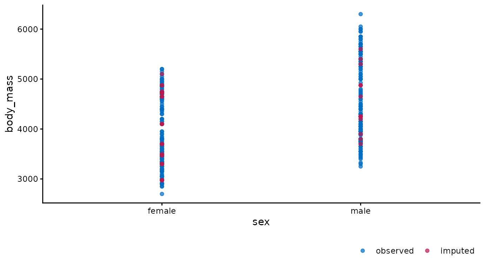
Visualization of the penguins dataset, showing body mass
measurements (in grams) and sex classification after multiply imputing
the missing values with mice. Imputed values are displayed
in red.
The ggmice() visualizations may be used to inspect the
incomplete and imputed data, and to evaluate imputation model fit (e.g.,
whether the missing data have been imputed within the range of the
observed data). Aside from the ggmice() function, the
package contains several other visualization tools for imputation with
mice. These other functions share the naming convention
plot_*() and several function arguments (e.g.,
vrb to plot only a subset of variables).
In this vignette, you will learn how to create and interpret
ggmice visualizations for each phase of your imputation
workflow. But first, we need some background information about the
ggmice package and its core function,
ggmice().
The ggmice package
The ggmice package unifies the visualization of
incomplete and imputed data, and offers tools for building and
evaluating imputation models in R (R Core Team 2025).
ggmice is an extension package to the popular R packages
mice (van Buuren and Groothuis-Oudshoorn
2011) and ggplot2 (Wickham 2016).
mice has become standard software for handling the
ubiquitous problem of incomplete data. With mice, missing
data points are ‘imputed’ (i.e., filled in) to obtain several completed
data sets. Filling in the missing data multiple times allows for a valid
representation of the uncertainty due to missingness.
ggmice supports mice workflows with graphical
evaluation tools.
The ggmice package also extends ggplot2, by
offering functionality for the visualization of missing and imputed
values. The functions in ggmice adhere to
ggplot2‘s ’grammar of graphics’ philosophy. The resulting
plots are standard ggplot objects, which means you can add
layers, labels, themes, facets, and transformations as usual. Moreover,
these editable ggplot objects are easily adapted into
publication-quality graphics.
The ggmice() function
The core function in the ggmice package is
ggmice(). ggmice() is a
ggplot2::ggplot() wrapper function, which plots either
missing or imputed values.
- When the
dataargument is supplied with an incomplete dataset (adata.frameobject),ggmice()visualizes observed and missing data. - When the
dataargument is supplied with multiply imputed datasets (amidsobject),ggmice()visualizes observed and imputed data.
The ggmice() function mimics how the
ggplot2 function ggplot() works. Both take a
data argument and a mapping argument, and will
return an object of class ggplot.
Using ggmice() looks equivalent to a
ggplot() call:
The main difference between the two functions is that
ggmice() includes some pre-processing steps for incomplete
and imputed data. The functions can be used interchangeably, except for
two key details:
The object supplied to the
dataargument inggmice()may be either an incomplete dataset of classdata.frame, or an imputation object of classmice::mids.The
mappingargument inggmice()cannot be empty.
This is in contrast to the aesthetic mapping in
ggplot(), which may also be provided in subsequent plotting
layers. Because of the internal processing in ggmice(), the
mapping argument is required for each
ggmice() call. An x or y mapping
(or both) has to be supplied for ggmice() to function. This
aesthetic mapping can be provided with the ggplot2 function
aes() (or equivalents). Other mappings may be provided too,
except for colour, which is already used to display
observed versus missing or imputed data.
After creating a ggplot object, any desired plotting
layers may be added (e.g., with the family of
ggplot2::geom_* functions), or adjusted (e.g., with the
ggplot2::labs() function). This makes ggmice()
a versatile plotting function for incomplete and imputed data.
Incomplete data
If the object supplied to the data argument in the
ggmice() function is a data.frame, the
visualization will contain observed data in blue and missing data in
red.
Because missing data points are by definition unobserved, their values cannot be plotted directly. While for categorical variables we can display the missing values as their own category, there is no straightforward way to show the missingness in continuous variables. Therefore, we typically omit incomplete observations from our graphs.
In bivariate graphs, however, we can display incomplete observations in variable pairs. When there is a missing datapoint on one variable and observed data on the other, there is no bivariate coordinate in the graph to display this incomplete observation. But we can still plot the information that we do have: the observed datapoint. These incomplete observations are plotted on the axes lines:
- Cases with observed
Xand missingYare plotted on the horizontal axis. - Cases with observed
Yand missingXare plotted on the vertical axis. - Cases with both
XandYmissing are plotted on the intersection of the two axes, since no data is available.
These plotted values are observed for the variable belonging to that
axis line, but not for the variable orthogonal to the axis line. This
provides a visual cue that the missing data is distinct from the
observed values, but still displays the observed value of the other
variable. In short, ggmice() plots the observed values of
incomplete cases on the axis line of the observed variable.
This is in contrast to a regular ggplot() call with the
same arguments, which would leave out all cases with missingness.
Imputed data
If the data argument in ggmice() is
provided a mice::mids object, the resulting plot will
contain observed data in blue and imputed data in red.
Experienced mice users may already be familiar with the
lattice style plotting functions in mice for
visualizing imputed data. These ‘old friends’ such as
mice::stripplot() can be re-created with the
ggmice() function, see the Old
friends vignette for advice.
So, with ggmice() we lose less information, and may gain
valuable insight into the missingness in the data.
Imputation workflow
In this vignette, the ggmice functions are presented in
the order of a typical imputation workflow, where the missingness is
first investigated, then imputation models are built based on relations
between variables, and finally the imputations are inspected
visually.
Set-up
You can install the latest ggmice release from CRAN with:
install.packages("ggmice")The development version of the ggmice package can be
installed from GitHub with:
# install.packages("pak")
pak::pak("amices/ggmice")After installing ggmice, you can load the package into
your R workspace. It is highly recommended to load the
mice and ggplot2 packages as well. This
vignette assumes that all three packages are loaded:
We will use the penguins data for illustrations,
available from the base R datasets. The
penguins dataset contains incomplete observational data on
penguin sightings
().
Each row represents an individual penguin, and the nine variables
describe its characteristics (e.g., species) and measurements (e.g.,
body weight in grams).
head(penguins)
#> species island bill_len bill_dep flipper_len body_mass sex year
#> 1 Adelie Torgersen 39.1 18.7 181 3750 male 2007
#> 2 Adelie Torgersen 39.5 17.4 186 3800 female 2007
#> 3 Adelie Torgersen 40.3 18.0 195 3250 female 2007
#> 4 Adelie Torgersen NA NA NA NA <NA> 2007
#> 5 Adelie Torgersen 36.7 19.3 193 3450 female 2007
#> 6 Adelie Torgersen 39.3 20.6 190 3650 male 2007In this vignette, we will treat the penguins data as our working example.
With that, we have the necessary packages (mice,
ggplot2, and ggmice) and an incomplete dataset
(penguins) to start the full imputation workflow. We will
first use ggmice to explore marginal and joint
distributions of incomplete variables. Next, we will construct and
inspect imputation models based on relations between the variables.
Finally, we will visualize the imputation algorithm output and assess
whether the imputation models yield plausible values.
Exploring incomplete data
In a mice workflow, the missing data should first be
inspected before determining an imputation strategy.
The missing data pattern shows where in the incomplete data the missing
values occur. Multivariate graphs may highlight the severity of the
missing data problem in the variables that will be used in the eventual
analysis model.
plot_miss()
The plot_miss() function facilitates the exploration of
the location of the missingness in the data. The result is the graphical
equivalent to the missingness matrix is.na(penguins).
plot_miss(penguins)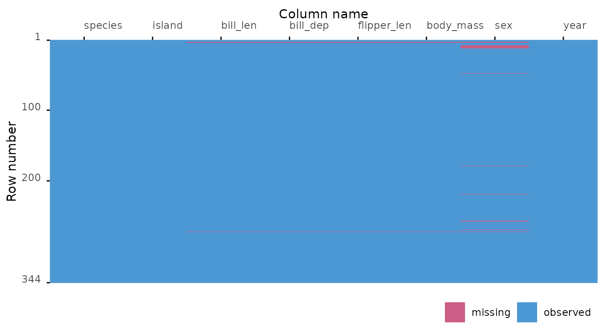
Visualization of the missing data matrix.
The plot can be ordered by the missingness proportion. In the ordered
graph, cases with more missing values are plotted last, matching the
order of the missing data pattern plot
(plot_pattern()).
plot_miss(penguins, ordered = TRUE)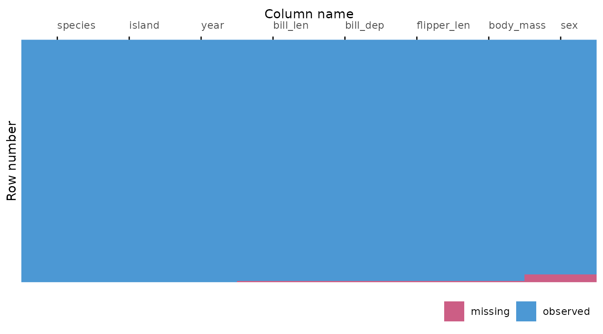
Visualization of the missing data matrix, ordered by the missingness proportion.
Other optional function arguments can be specified too (e.g.,
rotate to display the column names at a 90 degree angle).
Please refer to the function documentation for details.
plot_pattern()
The plot_pattern() function displays the missing data
pattern in an incomplete dataset, which should be supplied via the
data argument.
plot_pattern(penguins)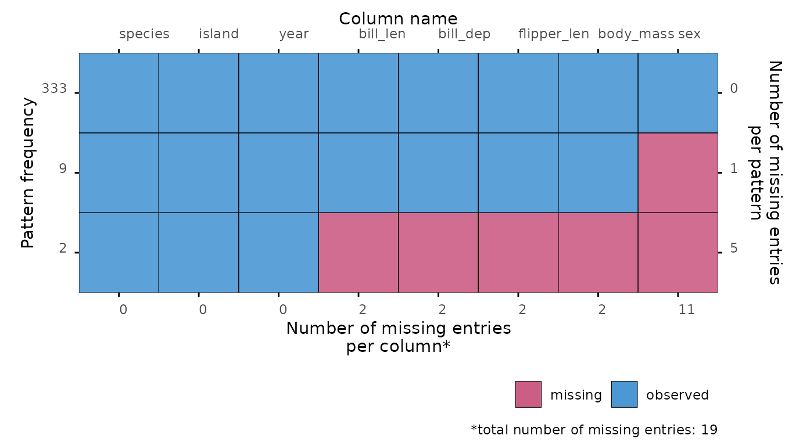
Missing data pattern plot.
The plot_pattern() function has several optional
arguments, such as square, which determines whether the
missing data pattern plot has the default square or rectangular tiles.
Please refer to the function documentation for details.
ggmice()
In the missing data exploration phase, the ggmice()
function can be used to visualize the distributions of incomplete
variables, associations with other variables, and with missingness
indicators.
For example, we can plot the distribution of an incomplete categorical variable with:
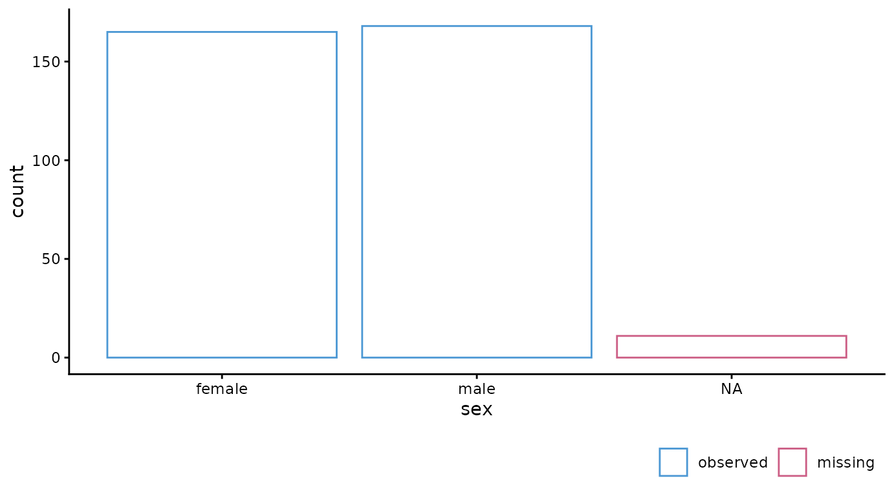
Bar graph showing the distribution of and missingess in the variable
sex.
In this graph, the missing data is plotted as a separate category.
We can also plot bivariate distributions in the incomplete data. To create a scatterplot of two continuous incomplete variables we can use:
ggmice(penguins, aes(x = bill_len, y = bill_dep)) +
geom_point()
Scatterplot of the penguins bill depth (in cm) by bill
length (in cm), showing missing values on the axis lines. The red point
at the intersection of the axes indicates that at least one penguin has
neither bill depth nor bill length observed.
Another bivariate graph can be made with the incomplete continuous
variable bill_dep against the incomplete categorical
variable sex:
ggmice(penguins, aes(x = sex, y = bill_dep)) +
geom_point()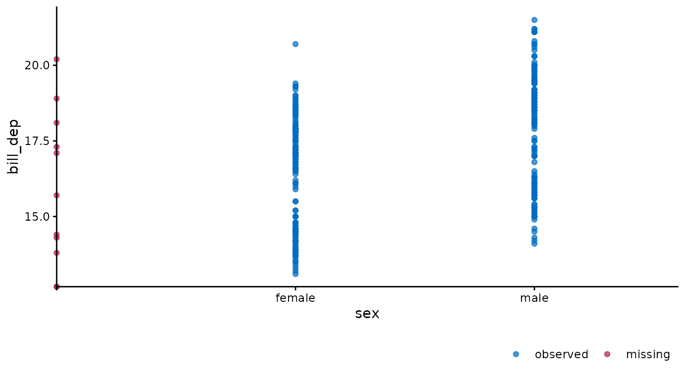
Visualization of bill depth (in cm) by sex, showing missing values in red on the axis lines. Observed values for bill depth with missing data for sex are plotted on the vertical axis. The red point at the intersection of the axes indicates that at least one penguin has neither bill depth nor sex observed.
The ‘grammar of graphics’ makes it easy to adjust the plots
programmatically. The ggplot2 framework allows us to
convert the plotted values of the variable bill_dep from
centimeters to inches with:
ggmice(penguins, aes(x = sex, y = bill_dep / 2.54)) +
geom_point() +
labs(y = "Bill depth (inches)")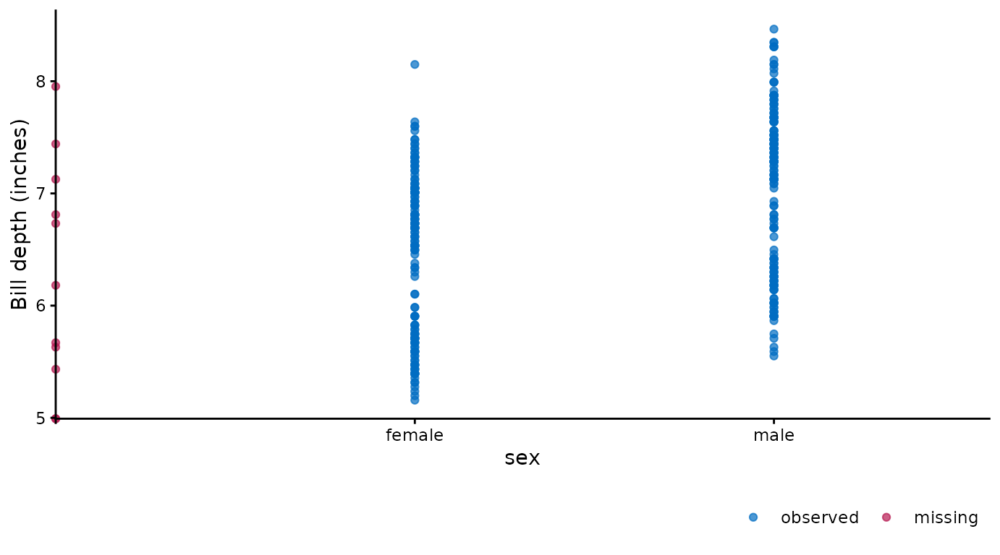
Visualization of bill depth (in inches) by sex, showing missing values in red on the axis lines. Observed values for bill depth with missing data for sex are plotted on the vertical axis. The red point at the intersection of the axes indicates that at least one penguin has neither bill depth nor sex observed.
Another benefit of ggplot objects is that they may be
adjusted using layers. If we would be interested in the sex differences
in bill length between the penguin species, we can just add facets based
on a clustering variable with:
ggmice(penguins, aes(x = sex, y = bill_dep)) +
geom_point() +
facet_wrap(~ species, labeller = label_both)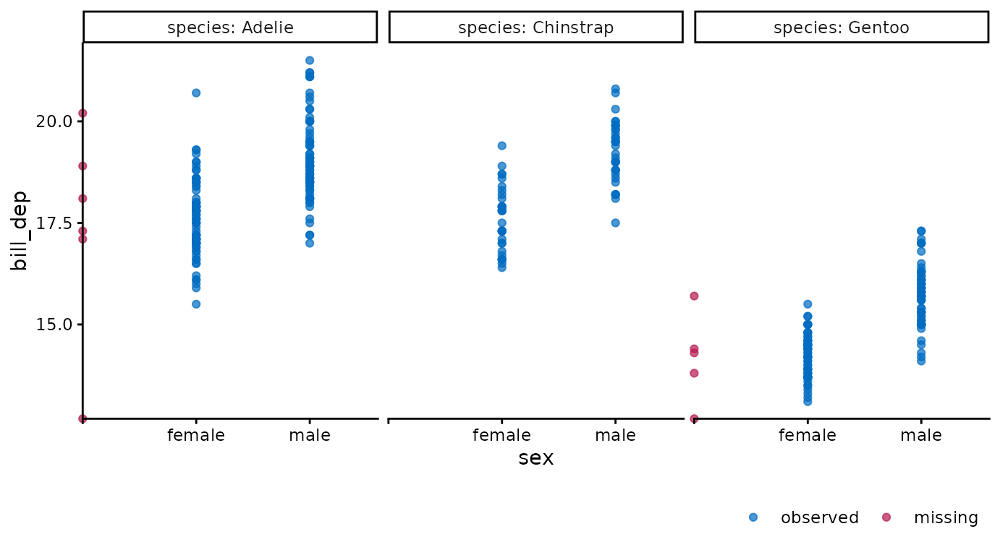
Visualization of bill depth by sex, split by penguin species. Observed values for bill depth with missing data for sex are plotted on the vertical axes. The red point at the intersection of the axes indicates that at least one penguin has neither bill depth nor sex observed.
Building imputation models
Imputation with mice requires an imputation model for
each incomplete variable, consisting of an imputation method and
imputation model predictors. These methods and predictors are either
assigned implicitly in the mice() call, or supplied by the
user as a methods vector and predictor matrix. The defaults in
mice() are to assign an imputation method based on the
column type of each incomplete variable, and to use all other variables
as imputation model predictors.
The methods vector specifies an imputation method per variable. The default methods vector can be created using:
meth <- make.method(penguins)
meth
#> species island bill_len bill_dep flipper_len body_mass
#> "" "" "pmm" "pmm" "pmm" "pmm"
#> sex year
#> "logreg" ""In the default methods vector, imputation methods are based on column
type, e.g., numeric data columns get assigned the semi-parametric
imputation method ‘predictive mean matching’ (pmm), whereas
dichotomous variables will be imputed using logistic regression.
The predictor matrix determines which variables will be used as predictors for imputing the incomplete variables. The default predictor matrix can be created with:
pred <- make.predictorMatrix(penguins)
pred
#> species island bill_len bill_dep flipper_len body_mass sex year
#> species 0 1 1 1 1 1 1 1
#> island 1 0 1 1 1 1 1 1
#> bill_len 1 1 0 1 1 1 1 1
#> bill_dep 1 1 1 0 1 1 1 1
#> flipper_len 1 1 1 1 0 1 1 1
#> body_mass 1 1 1 1 1 0 1 1
#> sex 1 1 1 1 1 1 0 1
#> year 1 1 1 1 1 1 1 0In the predictor matrix, rows represent variables to impute, and columns are potential imputation model predictors. By default, each variable is used as imputation model predictor for all other variables.
plot_pred()
The function plot_pred() displays mice
predictor matrices, optionally paired with imputation methods. To create
a predictor matrix plot, supply a predictor matrix via the
data argument:
plot_pred(pred)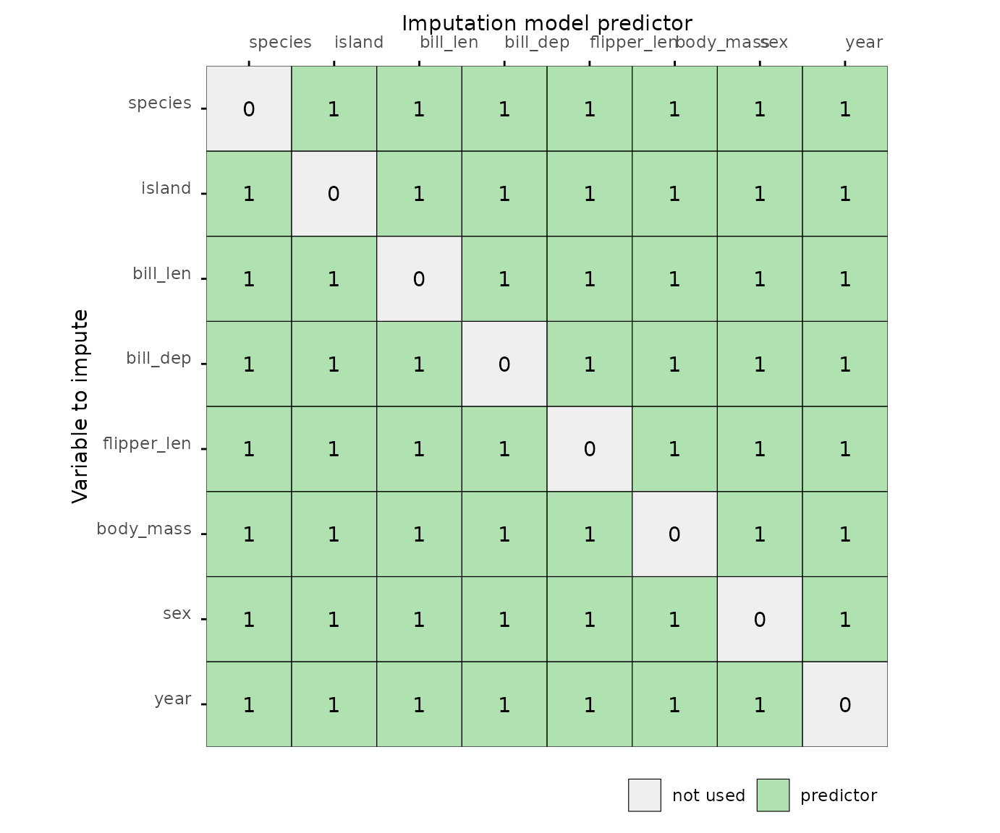
Predictor matrix with mice defaults.
Optional arguments may be added to the function call. For example, to
show the full imputation model per incomplete variable, supply the
methods vector via the optional argument meth:
plot_pred(pred, meth = meth)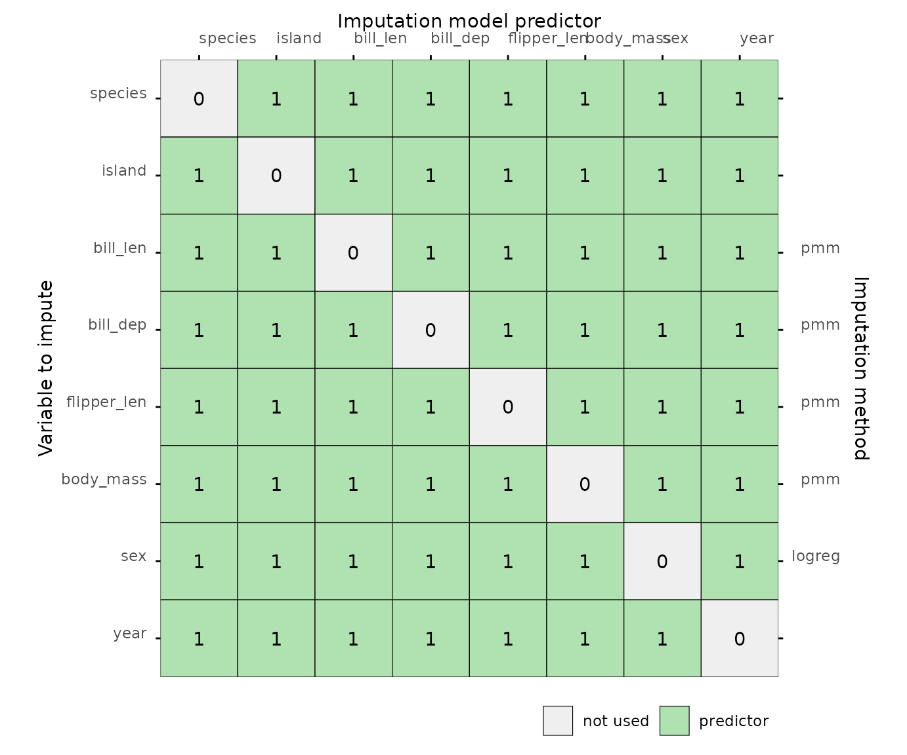
Predictor matrix with mice defaults including imputation
methods.
Please refer to the function documentation for details.
plot_corr()
The function plot_corr() can be used to investigate
relations between variables for the development of imputation models.
The function requires incomplete dataset (via the argument
data). All other arguments are optional, for example to add
textual labels of the estimated correlations (via the label
argument).
plot_corr(penguins, label = TRUE)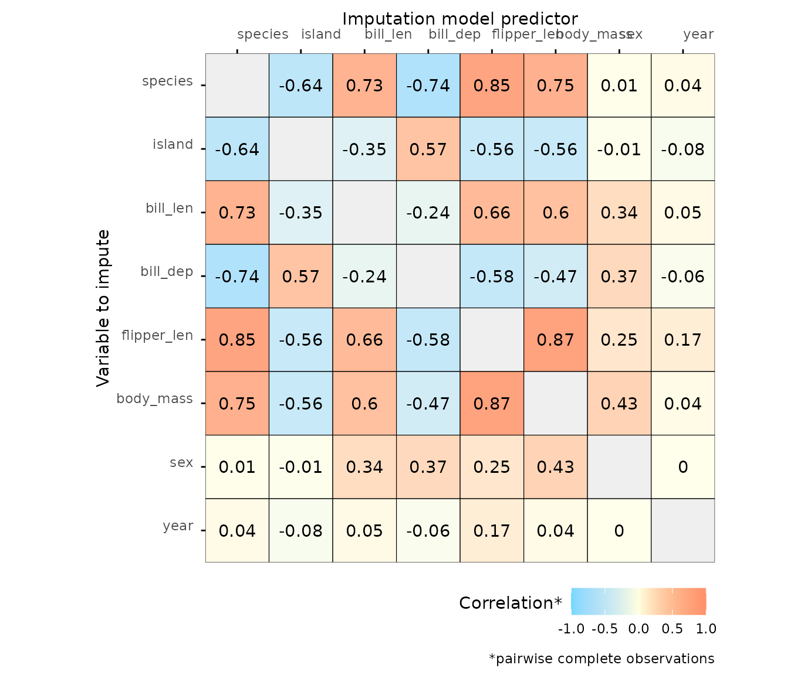
Visualization of bivariate correlations.
Based on these correlations, we can evaluate whether we have included all relevant imputation model predictors in the predictor matrix. With large datasets, for example, we might want to prune the predictor matrix, only to include the most relevant imputation model predictors.
The quickpred() function in mice selects
imputation model predictors based on associations in the data. The
function calculates correlations both with pairwise complete
observations, as well as with the missingness indicators. Any potential
imputation model predictor that surpasses a certain set threshold on
either one of the two correlations, is selected into the predictor
matrix.
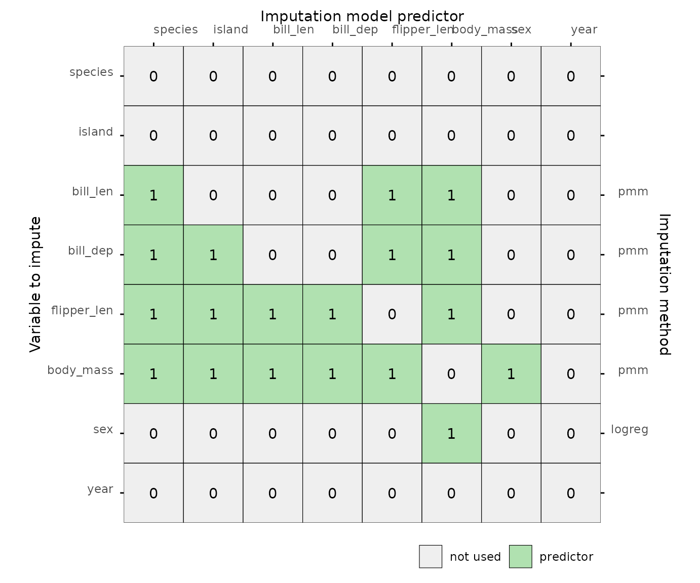
Predictor matrix plot after pruning the predictor matrix.
The result is a pruned predictor matrix, that only includes imputation model predictors with a strong linear associations with the incomplete variables or missingness indicators.
If we want to visualize this associations between observed data and missingness indicators, we can use an influx-outflux plot.
plot_flux()
The plot_flux() function produces an influx-outflux
plot. The influx of a variable quantifies how well its missing data
connect to the observed data on other variables. The outflux of a
variable quantifies how well its observed data connect to the missing
data on other variables. In general, higher influx and outflux values
are preferred when building imputation models.
The plotting function requires an incomplete dataset (argument
data), and takes optional arguments to adjust e.g., the
legend and axis labels:
plot_flux(penguins, label = FALSE)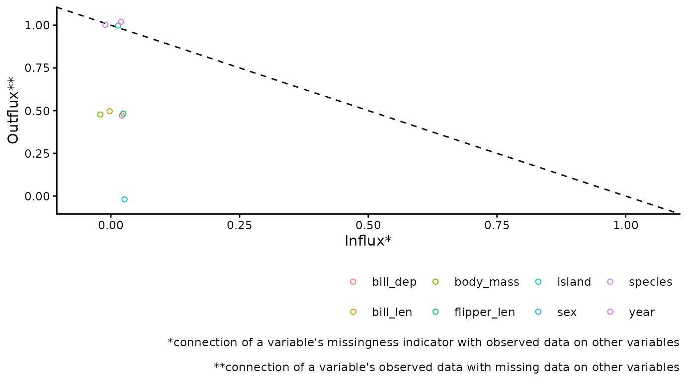
Influx-outflux plot, showing connections between observed data and
misisngness indicators. For example, species,
island, and year have high outflux values and
low influx, indicating that these observed variables may be quite
informative for imputing incomplete variables.
For details, see the function documentation.
We can use this information to adjust the imputation models, via
editing the predictor matrix. Based on the high outflux values, we add
species, island, and year to the
imputation models for all variables.
pred[, c("species", "island", "year")] <- 1Subsequently, we can remove any variable that now became an imputation model predictor for itself:
diag(pred) <- 0
plot_pred(pred, method = meth)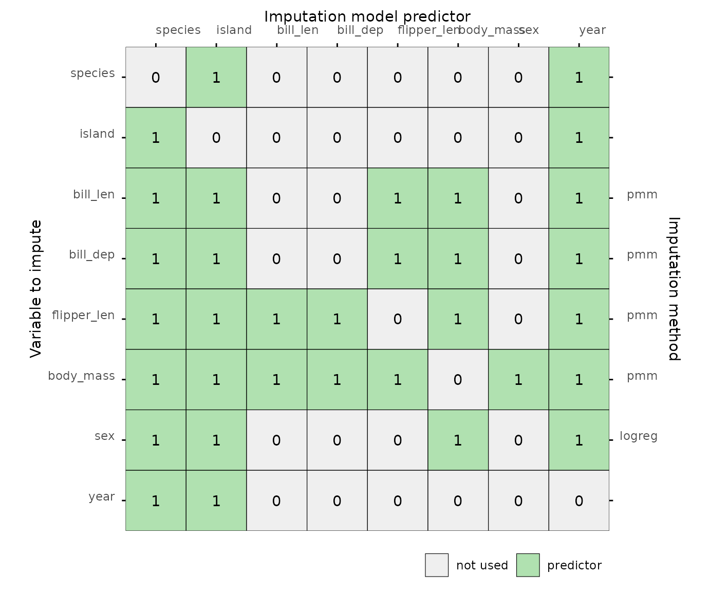
Predictor matrix plot after adding high outflux variables to the predictor matrix.
Another way to evaluate the associations with the missingness
indicators is using ggmice().
ggmice()
We can use ggmice() to visualize associations between
observed and missing data, by applying the function to incomplete data
and adding faceting based on a missingness indicator. This may help
further explore the missingness mechanisms in the incomplete data.
For example, to investigate which variables may be informative for
imputing the incomplete variable sex, we can create a graph
split by the missingness indicator of sex. To visualize the
association between the distribution of bill_len and the
missingness indicator of sex we use a faceted design:
ggmice(penguins, aes(bill_len)) +
geom_histogram(fill = "white") +
facet_grid(factor(
is.na(sex),
levels = c(TRUE, FALSE),
labels = c("missing sex", "observed sex")
) ~ .)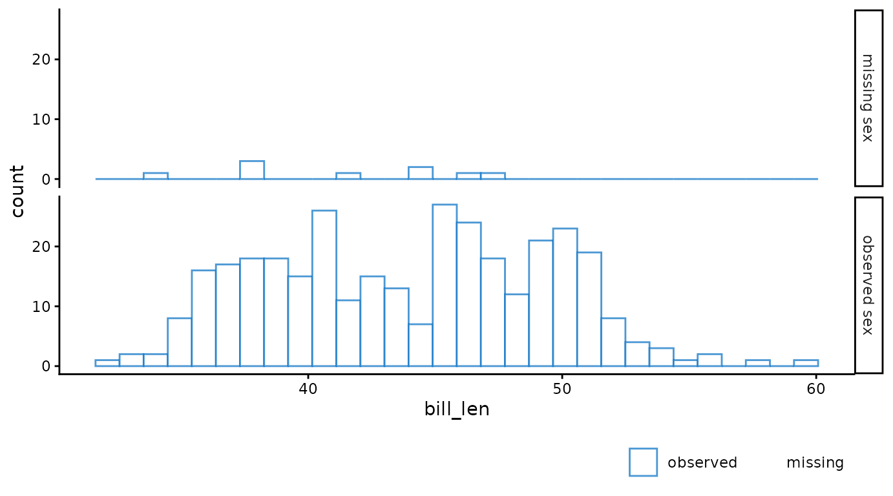
Distribution of observed bill length (in cm) split by the missingness
indicator of the variable sex. Since the missingness
indicator itself is always observed, this plot does not show any missing
data.
We can see there are some differences in the distribution of
bill_len based on the missingness indicator of
sex, which may imply that bill_len is
informative for imputing sex.
We add this variable to the imputation model of sex by
assigning bill_len as imputation model predictor in the
predictor matrix:
pred["sex", c("bill_len", "species")] <- 1Since we had already added some imputation model predictors, our predictor matrix now looks as follows:
plot_pred(pred, method = meth)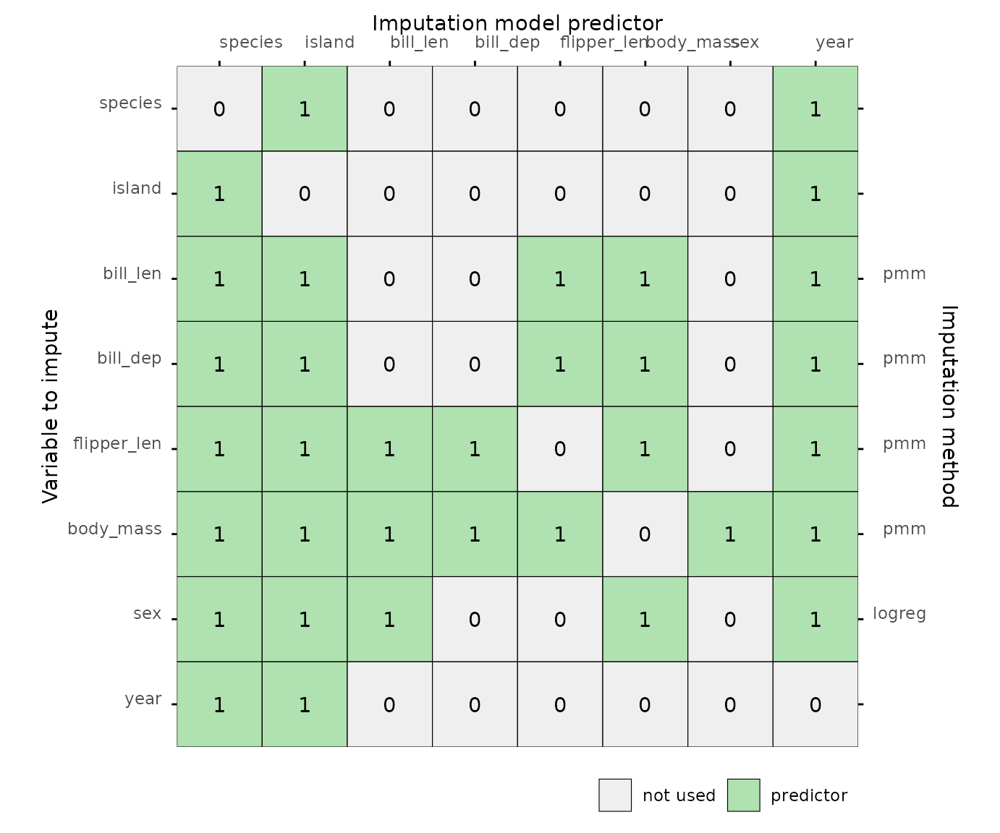
Predictor matrix plot after editing the predictor matrix.
This yields a final version of the imputation models, that we will use to impute the data.
Evaluating imputations
Run the imputation algorithm on the incomplete dataset, with the imputation models we built (i.e., the predictor matrix and methods vector), with three imputations.
imp <- mice(
penguins,
pred = pred,
method = meth,
m = 3,
print = FALSE
)
plot_trace()
The function plot_trace() plots the trace lines of the
MICE algorithm for convergence evaluation. The only required argument is
data (to supply a mice::mids object). Optional
arguments such as trend (to add a trend line that
facilitates interpretation) are described in the function documentation.
plot_trace(imp, trend = TRUE)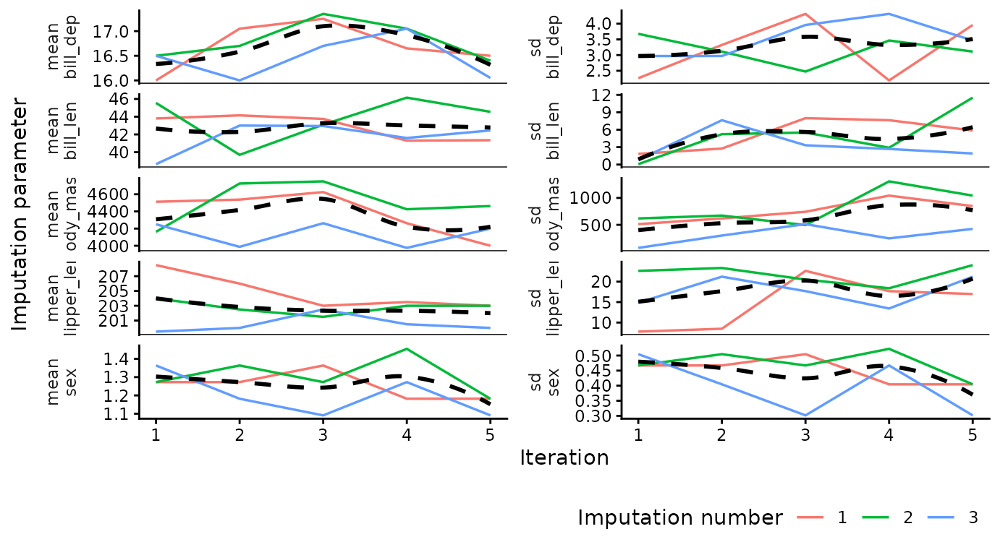
Trace plots for all variables.
For algorithmic convergence, the trace plot lines should be stationary (non-trending) and mixing (intermingling nicely). If we are unsure of the algorithmic convergence, we can add iterations to the imputation algorithm and re-evaluate:
imp <- mice.mids(imp, maxit = 5, print = FALSE)
plot_trace(imp, trend = TRUE)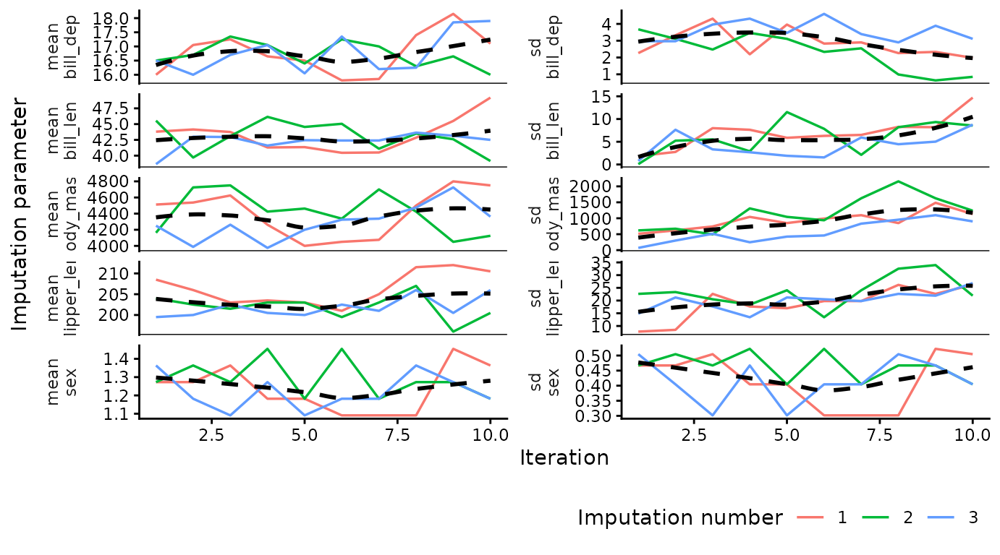
Trace plots for all variables after adding iterations.
We can supplement the inspection of the traceplots with evaluations
of the imputed values themselves. We can use ggmice() to
create visual diagnostics for the imputed variables.
ggmice()
Plotting the imputed data can reveal unrealistic imputations or
issues with the imputation models. Additionally, ggmice()
allows for graphical comparisons between the incomplete and imputed
data.
We can create the same plots as the ones on the incomplete data, but now on the imputed data:
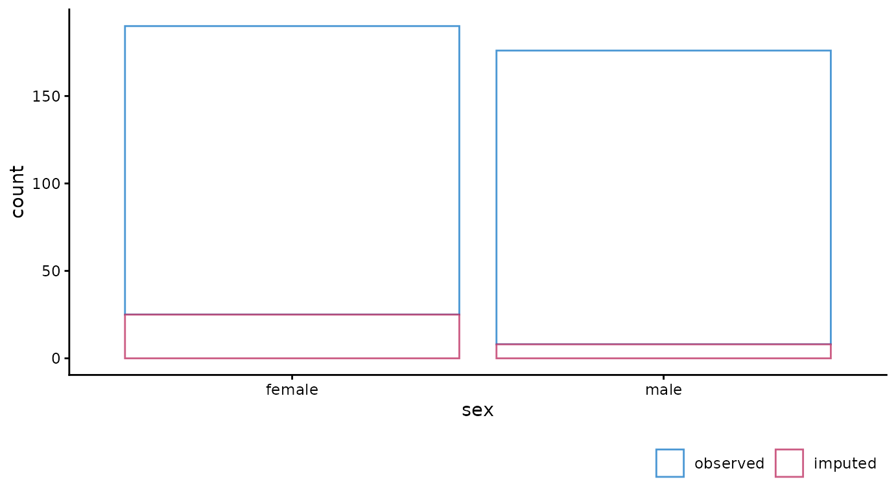
ggmice(imp, aes(x = bill_len, y = bill_dep)) +
geom_point()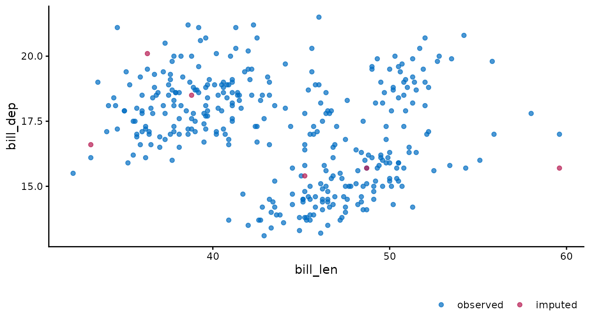
ggmice(imp, aes(x = sex, y = bill_dep)) +
geom_point()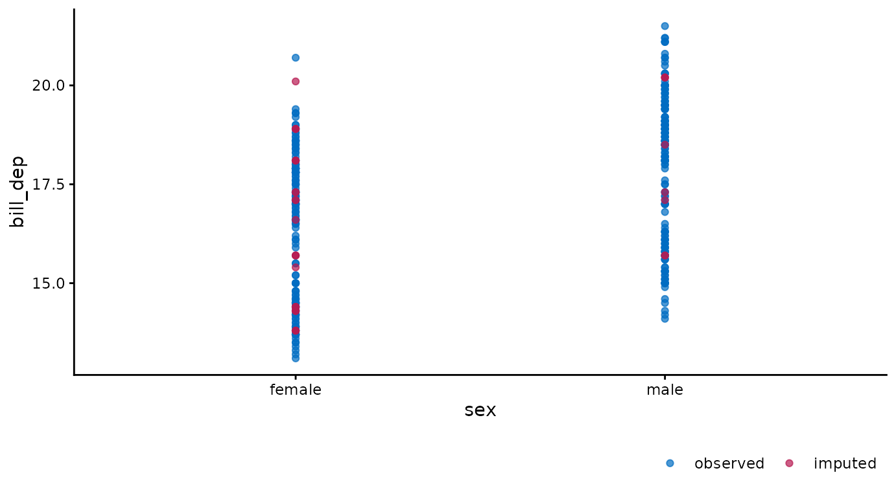
ggmice(imp, aes(x = sex, y = bill_dep / 2.54)) +
geom_point() +
labs(y = "Bill depth (inches)")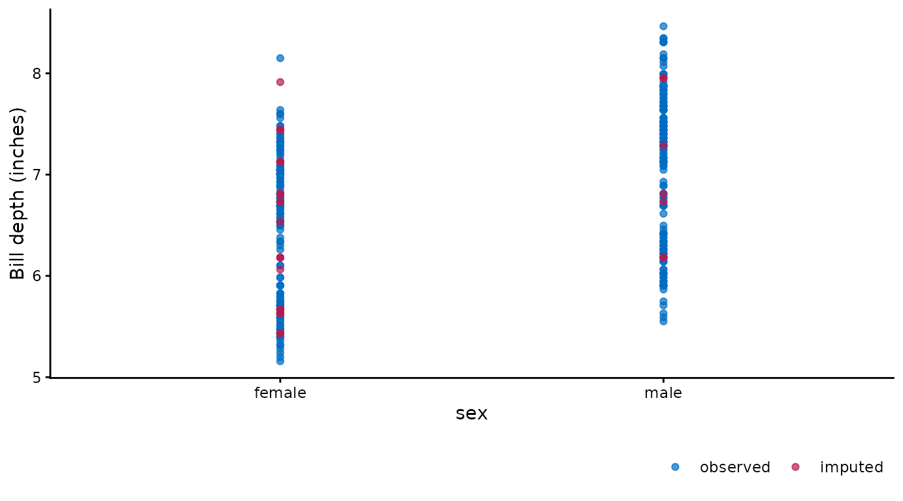
ggmice(imp, aes(x = sex, y = bill_dep)) +
geom_point() +
facet_wrap(~ species, labeller = label_both)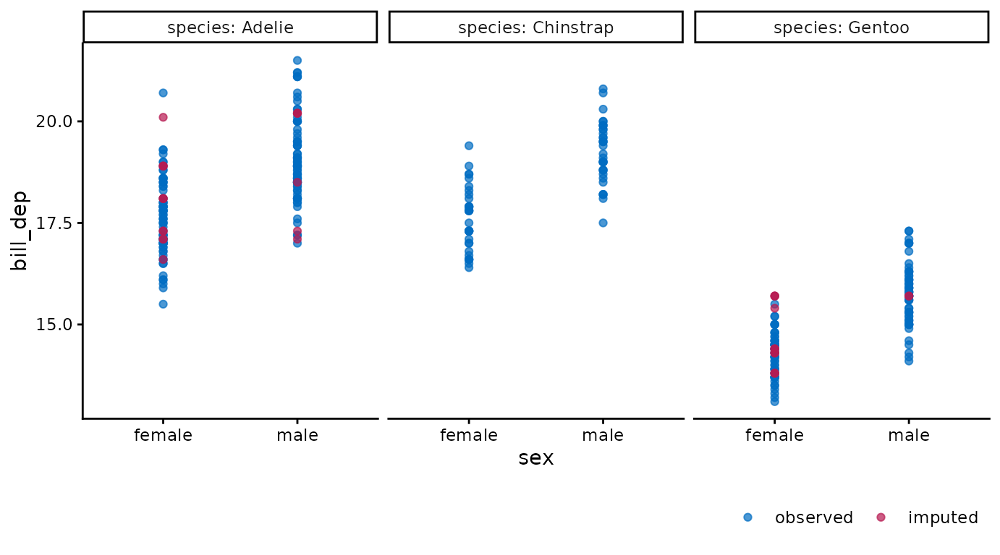
These figures show the observed data points once in blue, plus 3 imputed values in red for each missing entry.
In addition to recreating the graphs from the incomplete data
exploration stage, it is also possible to use the imputation number as
mapping variable in the plot. For example, we can create a stripplot of
observed and imputed data with the imputation number .imp
on the horizontal axis:
ggmice(imp, aes(x = .imp, y = bill_len)) +
geom_jitter(height = 0, width = 0.25) +
labs(x = "Imputation number")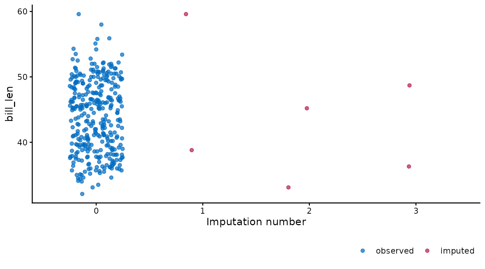
Stripplot of bill length (in cm) by imputation.
A major advantage of ggmice() over the equivalent
function mice::stripplot() is that ggmice
allows us to add subsequent plotting layers, such as a boxplot
overlay:
ggmice(imp, aes(x = .imp, y = bill_len)) +
geom_jitter(height = 0, width = 0.25) +
geom_boxplot(width = 0.5, linewidth = 1, alpha = 0.75, outlier.shape = NA) +
labs(x = "Imputation number")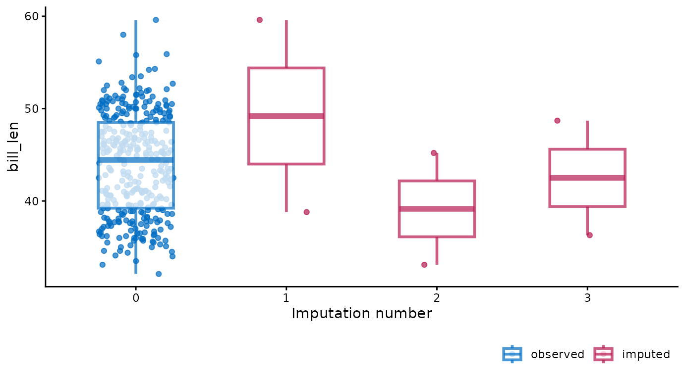
Stripplot combined with boxplot of bill length (in cm) by imputation.
Another advantage of the ‘grammar of graphics’ philosophy in
ggmice is that we can use faceting to split plots by
imputation number. This allows for further inspection of e.g., bivariate
distributions within each imputation:
ggmice(imp, aes(x = sex, y = bill_dep)) +
geom_point() +
facet_wrap(~.imp)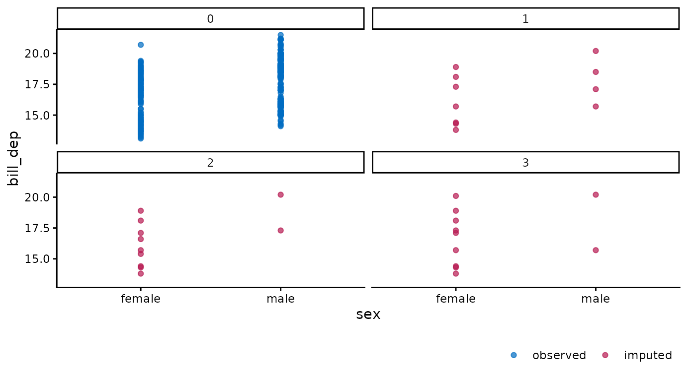
Scatterplots split by imputation.
When evaluating imputations, you may want to assess multiple
variables at once. To create plots of multiple imputed variables, we can
combine ggmice with the graphical formatting package
patchwork and the functional programming package
purrr.
You can combine figures with patchworks’s
wrap_plots() function:
p1 <- ggmice(imp, aes(x = .imp, y = bill_len)) + geom_boxplot()
p2 <- ggmice(imp, aes(x = .imp, y = bill_dep)) + geom_boxplot()
patchwork::wrap_plots(p1, p2)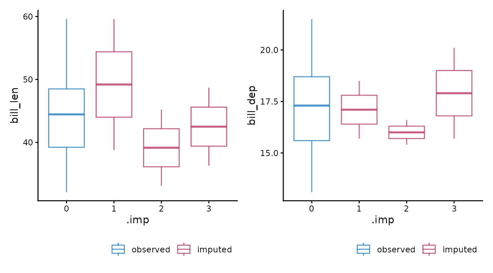
Combined boxplots.
And to plot many variables at once, we can use the purrr
function map() (which works like a vectorized
for loop). If we want to create stripplots of every imputed
variable–and only imputed variables–we first need to know which
variables were imputed. We generate a vector with the imputed variable
names by extracting all variable names, and then indexing the variables
where the number of imputed values is greater than zero:
Subsequently, we can use functional programming to create a plot for each imputed variable:
plot_list <- purrr::map(vrb_imp, function(vrb){
ggmice(imp, aes(x = .imp, y = .data[[vrb]])) +
geom_jitter() +
labs(x = "Imputation number")
})And finally, we use patchwork to combine the plot into
one object:
plot_list |>
patchwork::wrap_plots()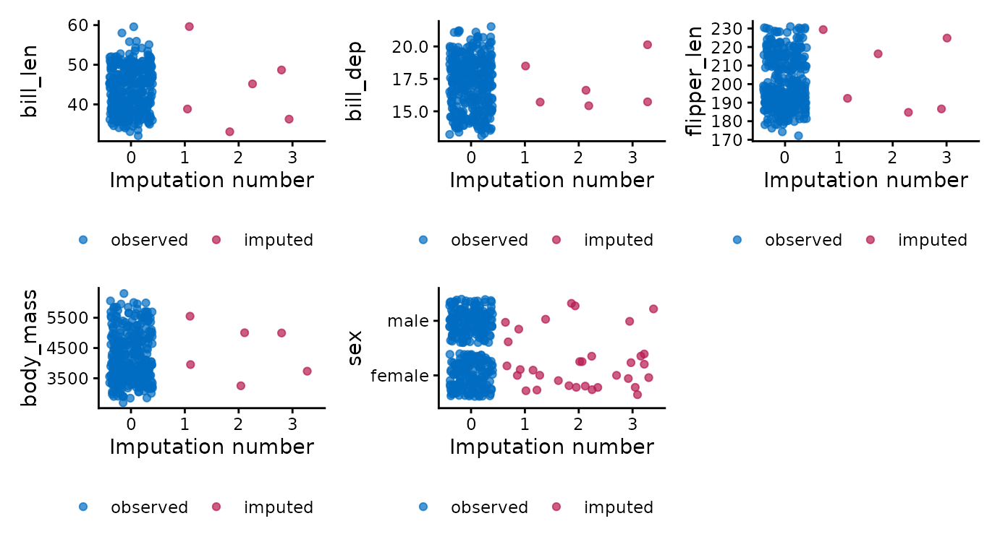
Combined stripplots.
Take-aways
In this vignette, you have seen how ggmice can support
each phase of a mice imputation workflow, from the first
look at the incomplete data to evaluating the imputations.
In the exploration of the incomplete data, the ggmice()
function allows you to visualize missing datapoints instead of silently
discarding incomplete cases. Other missingness exploration functions,
such as plot_pattern(), may help you understand the
structure of the missing data problem and subsequently inform imputation
model choices.
When building imputation models, ggmice() may be used to
investigate associations between the observed data and missingness
indicators. Other visualization functions that may aid imputation model
building are plot_pred(), plot_corr(), and
plot_flux().
Applied to imputed data (mids objects),
ggmice() visualizes observed and imputed values together,
making it straightforward to compare the distributions before and after
imputation. These graphs may also flag potential problems in the
imputation model fit, such as implausible imputed values, or algorithmic
non-convergence. Algorithmic convergence is a prerequisite for using
mice imputations in any subsequent statistical analysis.
Therefore, the plot_trace() function offers tools for
visually diagnosing non-convergence.
Across these steps, an advantage of ggmice is that all
visualizations are standard ggplot objects. This means you
can adapt them to your own preferences and publication standards with
the usual ‘grammar of graphics’ functionality.
Supporting information
This is the end of the vignette.
This document was generated using:
sessionInfo()
#> R version 4.6.1 (2026-06-24)
#> Platform: x86_64-pc-linux-gnu
#> Running under: Ubuntu 24.04.4 LTS
#>
#> Matrix products: default
#> BLAS: /usr/lib/x86_64-linux-gnu/openblas-pthread/libblas.so.3
#> LAPACK: /usr/lib/x86_64-linux-gnu/openblas-pthread/libopenblasp-r0.3.26.so; LAPACK version 3.12.0
#>
#> locale:
#> [1] LC_CTYPE=C.UTF-8 LC_NUMERIC=C LC_TIME=C.UTF-8
#> [4] LC_COLLATE=C.UTF-8 LC_MONETARY=C.UTF-8 LC_MESSAGES=C.UTF-8
#> [7] LC_PAPER=C.UTF-8 LC_NAME=C LC_ADDRESS=C
#> [10] LC_TELEPHONE=C LC_MEASUREMENT=C.UTF-8 LC_IDENTIFICATION=C
#>
#> time zone: UTC
#> tzcode source: system (glibc)
#>
#> attached base packages:
#> [1] stats graphics grDevices utils datasets methods base
#>
#> other attached packages:
#> [1] ggmice_0.1.2 ggplot2_4.0.3 mice_3.19.0
#>
#> loaded via a namespace (and not attached):
#> [1] gtable_0.3.6 shape_1.4.6.1 xfun_0.60 bslib_0.12.0
#> [5] htmlwidgets_1.6.4 lattice_0.22-9 vctrs_0.7.3 tools_4.6.1
#> [9] Rdpack_2.6.6 generics_0.1.4 tibble_3.3.1 pan_2.0
#> [13] pkgconfig_2.0.3 jomo_2.7-6 Matrix_1.7-5 RColorBrewer_1.1-3
#> [17] S7_0.2.2 desc_1.4.3 lifecycle_1.0.5 compiler_4.6.1
#> [21] farver_2.1.2 stringr_1.6.0 textshaping_1.0.5 codetools_0.2-20
#> [25] htmltools_0.5.9 sass_0.4.10 yaml_2.3.12 glmnet_5.0
#> [29] pillar_1.11.1 pkgdown_2.2.1 nloptr_2.2.1 jquerylib_0.1.4
#> [33] tidyr_1.3.2 MASS_7.3-65 cachem_1.1.0 reformulas_0.4.4
#> [37] iterators_1.0.14 rpart_4.1.27 boot_1.3-32 foreach_1.5.2
#> [41] mitml_0.4-5 nlme_3.1-169 tidyselect_1.2.1 digest_0.6.39
#> [45] stringi_1.8.9 dplyr_1.2.1 purrr_1.2.2 labeling_0.4.3
#> [49] splines_4.6.1 fastmap_1.2.0 grid_4.6.1 cli_3.6.6
#> [53] magrittr_2.0.5 patchwork_1.3.2 survival_3.8-6 broom_1.0.13
#> [57] withr_3.0.3 scales_1.4.0 backports_1.5.1 rmarkdown_2.31
#> [61] otel_0.2.0 nnet_7.3-20 lme4_2.0-6 ragg_1.5.2
#> [65] evaluate_1.0.5 knitr_1.51 rbibutils_2.4.1 mgcv_1.9-4
#> [69] rlang_1.3.0 Rcpp_1.1.2 glue_1.8.1 minqa_1.2.8
#> [73] jsonlite_2.0.0 R6_2.6.1 systemfonts_1.3.2 fs_2.1.0Acknowledgements
The ggmice package is developed with guidance and
feedback from Gerko Vink, Stef van Buuren, and others. This project has
received funding from the European Union’s Horizon 2020 research and
innovation programme under ReCoDID grant agreement No 825746.